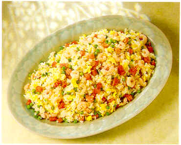

Thủ đô nước Mỹ đã chuẩn bị xong mọi thứ để lễ nhậm chức của vị tổng thống da màu đầu tiên
trong lịch sử Barack Obama diễn ra ngày 20/1, trong đó trung tâm là tòa nhà Capitol.


Những thảm họa hàng không ở New York
 Khủng bố lái máy bay đâm thẳng vào tòa tháp đôi của Trung tâm Thương mại Quốc tế; một
khu vực lớn trên mặt đất ngập lửa khói vì máy bay lao xuống. Dưới đây là hình ảnh các
thảm họa hàng không từng xảy ra ở New York, Mỹ.
Khủng bố lái máy bay đâm thẳng vào tòa tháp đôi của Trung tâm Thương mại Quốc tế; một
khu vực lớn trên mặt đất ngập lửa khói vì máy bay lao xuống. Dưới đây là hình ảnh các
thảm họa hàng không từng xảy ra ở New York, Mỹ.
Trục vớt máy bay lao xuống sông
Máy bay chở hàng trăm khách khách lao xuống sông New York
Người hùng trong cú hạ cánh kỳ diệu ở New York
Âm lịch
Nếu muốn chèn lịch vào trang web , có cả âm lịch thì vào địa chỉ:
Nghệ thuật sống
Sống đẹp
Lời hay ý đẹp
Sự bình yên
 Một vị vua treo giải thưởng cho họa sĩ nào vẽ được một bức tranh đẹp nhất về sự bình yên.
Một vị vua treo giải thưởng cho họa sĩ nào vẽ được một bức tranh đẹp nhất về sự bình yên.
Thư giãn
Thơ hay
Truyện cười
BÀi thơ có 8 cách đọc
Đây là một bài thơ thật kỳ lạ. Có đến 8 cách đọc khác nhau
Làm sao chiên cơm cho ngon
 Khi chọn gạo, không nên mua loại gạo cũ, gạo mới làm món cơm chiên có mùi thơm và độ dẻo. Cơm chiên ngon phải được chiên trên cơm nấu thật ngon. Tức hạt cơm được nấu chín mềm, không nhão, không khô, có độ dẻo.